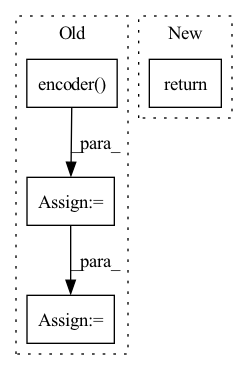

Pattern ID :3100

Before Change
def forward(self, x):
// x: tensor of shape (batch_size, seq_length, hidden_size)
encoder_hidden = self.encoder(x)
hidden = encoder_hidden
for t in range(self.length):
reconstruct_output, hidden = self.decoder(x, hidden)
After Change
// x: tensor of shape (batch_size, seq_length, hidden_size)
reconstruct_output, hidden = self.decoder(x, self.encoder(x))
return reconstruct_output.view(x.shape[0], -1)
In pattern: SUPERPATTERN
Frequency: 3
Non-data size: 4
Instances
Fragment ID: 10158616
Project Name: tvs-ai/pytorch_rppgs
Commit Name: f4f016c311e1e2e15b7fb36a7e161c8a8d4e394b
Time: 2023-01-02
Author: 57242033+najy97@users.noreply.github.com
File Name: vid2bp/nets/modules/LSTMAutoEncoder.py
M Class Name: LSTMAutoEncoder
N Class Name: LSTMAutoEncoder
M Method Name: forward(2)
N Method Name: forward(2)
M Parent Class: nn.Module
N Parent Class: nn.Module
M File Name: vid2bp/nets/modules/LSTMAutoEncoder.py
N File Name: vid2bp/nets/modules/LSTMAutoEncoder.py
M Start Line: 59
M End Line: 65
N Start Line: 55
N End Line: 57
'>
Before Change
self.fc = nn.Linear(encoder.get_feature_size(), action_size)
def forward(self, x, with_logits=False):
h = self.encoder(x)
logits = self.fc(h)
log_probs = F.log_softmax(logits, dim=1)
if with_logits:
return log_probs, logits
return log_probs
After Change
self._fc = nn.Linear(encoder.get_feature_size(), action_size)
def forward(self, x: torch.Tensor) -> torch.Tensor:
return self.compute_log_probs_with_logits(x)[0]
def compute_log_probs_with_logits(
self, x: torch.Tensor
'>
Fragment ID: 10158602
Project Name: takuseno/d3rlpy
Commit Name: 9ccb6121c0baead0ffb85b64207c4fe6dc5fd5b5
Time: 2021-01-01
Author: takuma.seno@gmail.com
File Name: d3rlpy/models/torch/imitators.py
M Class Name: DiscreteImitator
N Class Name: DiscreteImitator
M Method Name: forward(2)
N Method Name: forward(3)
M Parent Class: nn.Module
N Parent Class: nn.Module
M File Name: d3rlpy/models/torch/imitators.py
N File Name: d3rlpy/models/torch/imitators.py
M Start Line: 82
M End Line: 88
N Start Line: 82
N End Line: 83
'>
Before Change
def forward(self, x):
y = self.encoder(x)
f = self.feature_maker(y)
y_ = self.feature_demaker(f)
x_ = self.decoder(y_, self.encoder.pool_indeces)
return x_
After Change
self.decoder = Decoder(decoder_layers)
def forward(self, x):
return self.decode(self.encode(x))
def encode(self, x):
return self.encoder(x)
'>
Fragment ID: 10158611
Project Name: anderzzz/monkey_caput
Commit Name: 030b5d74b285434e4b91e4727c0183f708c4443e
Time: 2020-10-08
Author: ohrn.anders@gmail.com
File Name: ae_cluster.py
M Class Name: AutoEncoder
N Class Name: AutoEncoder
M Method Name: forward(2)
N Method Name: forward(2)
M Parent Class: nn.Module
N Parent Class: nn.Module
M File Name: ae_cluster.py
N File Name: ae_cluster.py
M Start Line: 179
M End Line: 184
N Start Line: 162
N End Line: 162